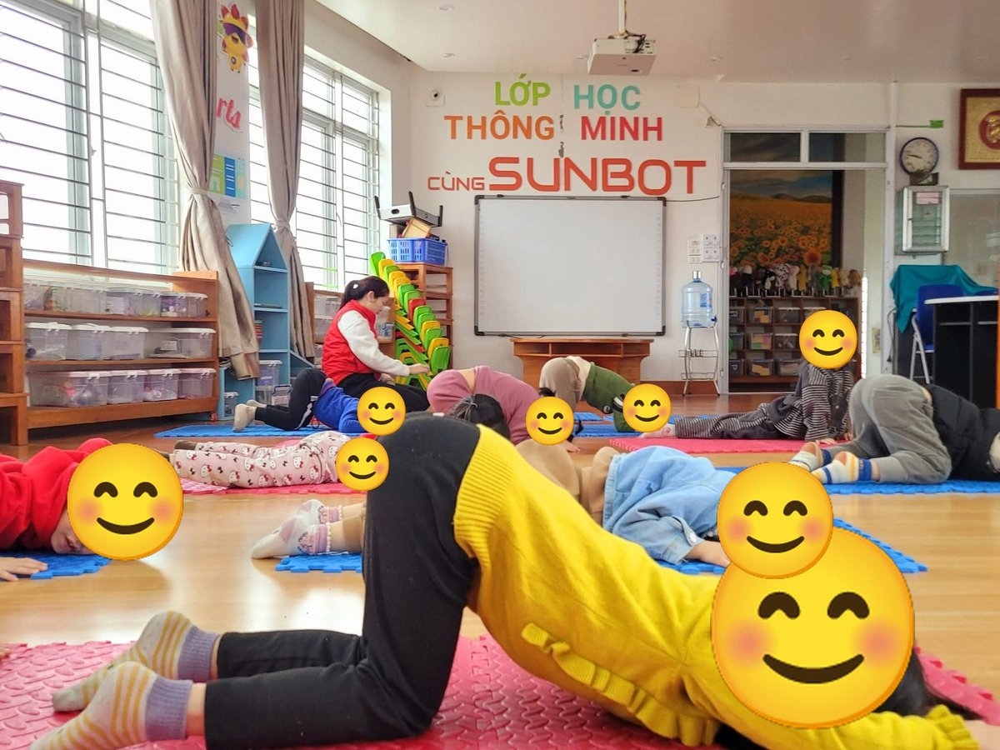

Chủ đề 28 · Động vật trong rừng
Sóc Nâu và hạt dẻ
🌟 Bài học trong câu chuyện
Giới luật yoga: Asteya – Không lấy đồ của người khác. Muốn dùng đồ của bạn thì bé hỏi trước và trả lại.
Kỹ năng sống: Hỏi trước khi lấy đồ, không lấy đồ của bạn.
1. Khởi động (2 phút)
Cả lớp ngồi xếp bằng thành vòng tròn. Cùng thở 3 hơi thở bông hoa: hít vào bằng mũi như ngửi hoa, thở ra bằng miệng thật chậm. Chắp tay trước ngực và chào nhau: “Namaste, chào các bạn!”
2. Câu chuyện: Sóc Nâu và hạt dẻ (đọc cho bé nghe, 4 phút)
Cô đọc trọn câu chuyện cho bé nghe trước. Sau đó cô kể lại từng đoạn ngắn và cả lớp cùng tập 10 tư thế ở phần bên dưới.
Mùa thu đến, lá rừng vàng rực. Sóc Nâu tất bật đi nhặt hạt dẻ để dành cho mùa đông lạnh giá. Trên đường, Sóc gặp bác Gấu Nâu chào: "Chào cháu, đi nhặt hạt à?". Bác Hổ đang vươn mình trên tảng đá.
Đi một lúc, Sóc thấy dưới gốc cây có một đống hạt dẻ rất to, xung quanh không có ai. Cáo tinh nghịch ghé tai Sóc thì thầm: "Đống hạt không ai trông kìa, lấy đi, chẳng ai biết đâu!"
Sóc ngồi nhìn đống hạt, thèm lắm. Có đống hạt ấy, Sóc khỏi phải đi nhặt nữa. Nhưng Sóc nhớ lời mẹ dặn: "Đồ của người khác, mình phải hỏi trước. Không được tự ý lấy". Bạn Rắn trườn qua cũng gật gù: "Đúng đấy".
Sóc quyết định đứng chờ dưới cây cổ thụ để tìm chủ của đống hạt. Bạn Hươu Sao chạy đến: "Đó là hạt của bạn Chuột Chũi đấy, bạn ấy nhặt cả tuần". Chú Khỉ đu cành đi gọi Chuột Chũi về.
Chuột Chũi về, cảm ơn Sóc rối rít vì đã trông hộ đống hạt. Chuột Chũi còn chia cho Sóc một nắm hạt dẻ thơm nhất. Ếch rừng nhảy "ộp ộp" vui mừng, Chim Gõ Kiến gõ "cốc cốc" trên thân cây như vỗ tay khen Sóc Nâu ngoan.
3. Kể lại và tập 10 tư thế (6 phút)
-
 1
1Gấu nâu
🧘 Tư thế Gấu bò (Bear Walk)
Lời kể khi tập: Bác Gấu đi qua chào Sóc: "Chào cháu, đi nhặt hạt à?"
Cách làm: Dang rộng hai chân, cúi xuống chống hai tay xuống sàn, mông nâng cao, bò đi chậm rãi như gấu. Giữ 3 đến 5 nhịp thở.
-

2Con hổ
🧘 Tư thế Hổ vươn mình (Tiger Stretch)
Lời kể khi tập: Hổ vươn mình trên tảng đá.
Cách làm: Quỳ gối, đẩy hai tay ra thật xa phía trước, hạ ngực và trán xuống thảm, mông nâng cao như hổ vươn mình. Giữ 3 đến 5 nhịp thở.
-
 3
3Cáo tinh nghịch
🧘 Tư thế Chó úp mặt (Downward Dog)
Lời kể khi tập: Cáo thì thầm: "Đống hạt kia không ai trông, lấy đi!"
Cách làm: Chống hai tay và hai chân xuống thảm, nâng mông lên cao, người thành hình tam giác. Giữ 3 đến 5 nhịp thở.
-
 4
4Sóc ôm hạt
🧘 Tư thế Ngồi xổm (Garland)
Lời kể khi tập: Sóc ngồi nhìn đống hạt, rất muốn lấy.
Cách làm: Ngồi xổm, hai gối mở rộng, gót chân chạm sàn nếu được, hai tay chắp trước ngực. Bé nhỏ có thể ngồi lên viên gạch như trong ảnh. Giữ 3 đến 5 nhịp thở.
-
 5
5Con rắn
🧘 Tư thế Rắn hổ mang (Cobra)
Lời kể khi tập: Nhưng Sóc nhớ lời mẹ: "Đồ của người khác, phải hỏi trước".
Cách làm: Nằm sấp, chống hai tay (hoặc hai khuỷu tay) dưới vai, nâng ngực lên, phát tiếng xì xì như rắn. Giữ 3 đến 5 nhịp thở.
-
 6
6Cây cổ thụ
🧘 Tư thế Cái cây (Tree)
Lời kể khi tập: Sóc đứng chờ dưới cây cổ thụ để tìm chủ của đống hạt.
Cách làm: Đứng một chân, bàn chân kia đặt vào bắp chân hoặc đùi (không đặt lên đầu gối), hai tay chắp trên đầu. Giữ 3 đến 5 nhịp thở.
-
 7
7Hươu sao
🧘 Tư thế Chiến binh 1 (Warrior 1)
Lời kể khi tập: Bạn Hươu chạy đến: "Đó là hạt của bạn Chuột Chũi đấy".
Cách làm: Một chân bước dài ra trước, gối trước hơi gập, chân sau thẳng, hai tay vươn lên cao. Giữ 3 đến 5 nhịp thở.
-
 8
8Khỉ đu cành
🧘 Tư thế Bước dài hạ gối (Low Lunge)
Lời kể khi tập: Khỉ đu cành đi gọi Chuột Chũi về.
Cách làm: Một chân bước dài ra trước, gối sau hạ xuống thảm, một hoặc hai tay vươn cao. Giữ 3 đến 5 nhịp thở.
-
 9
9Ếch rừng
🧘 Tư thế Con ếch (Frog)
Lời kể khi tập: Chuột Chũi về, cảm ơn Sóc đã không lấy hạt. Ếch nhảy vui "ộp ộp".
Cách làm: Ngồi xổm, hai tay chạm sàn giữa hai chân, bật nhảy nhẹ và kêu "ộp ộp". Giữ 3 đến 5 nhịp thở.
-
 10
10Chim gõ kiến
🧘 Tư thế Gập người đứng (Forward Fold)
Lời kể khi tập: Chuột Chũi tặng Sóc một nắm hạt. Chim gõ kiến gõ "cốc cốc" khen Sóc ngoan.
Cách làm: Đứng, gối hơi chùng, cúi gập người, hai tay buông thả xuống sàn. Giữ 3 đến 5 nhịp thở.
4. Thư giãn (2 phút)
Các con nằm ngửa, tay chân thả lỏng, nhắm mắt lại. Cô nói nhẹ: “Hít vào thật chậm… thở ra thật chậm… Con nhớ lại câu chuyện vừa rồi, nhớ người bạn mình thích nhất trong truyện. Cơ thể con mềm như bông, nhẹ như mây.” Sau đó các con nghiêng người, từ từ ngồi dậy.
5. Trò chuyện cùng bé (1 phút)
Sóc Nâu không lấy hạt dẻ của bạn khi chưa hỏi. Không lấy đồ của người khác là Asteya.
Cô hỏi các con:
- Muốn mượn đồ chơi của bạn, con nói gì?
- Nhặt được đồ của bạn, con làm gì?
Kết thúc bằng lời chào “Namaste” và một nụ cười.
Lưu ý cho thầy cô và bố mẹ: Tập trên thảm, không tập ngay sau khi ăn no. Bé chỉ làm tới mức thấy dễ chịu, không ép bé. Tư thế đứng một chân có thể cho bé vịn tường hoặc vịn tay người lớn.